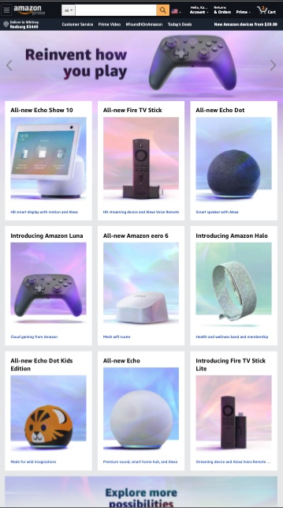
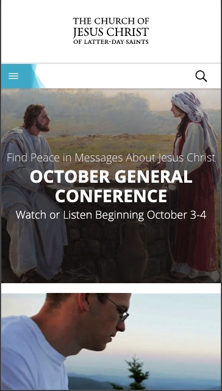
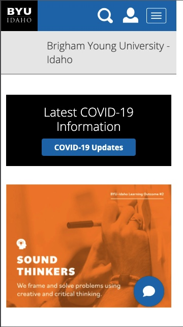

Alignment
Amazon I choose the Amazon Homepage as an example of Alignment because of the way that their selections are horizonataly aligned. This makes it easier to organize the selections and makes it easier for the buyers to find what they want.
White Space
Church of Jesus Christ I chose the Church of Jesus Christ Homepage as an example of white space because the designers of this home page understand the importance of allowing the website to increase the emphazis on what is really important. The white space makes it so that the first thing I see is the picture of Jesus Christ at the fountain. It helps emphasize General Conference.
Fitts Law
BYU-Idaho Home Page I choose the BYU-Idaho Homepage as an example of Fitts Law because of how easy and accessible the buttons are. All of the buttons are a perfect distance from the pictures and they are not too overwhelming.